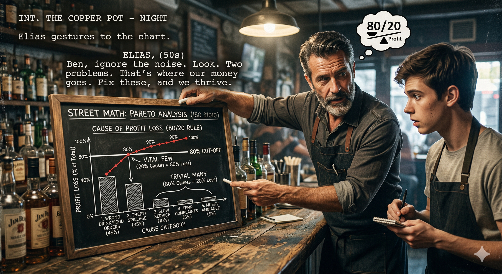

FADE IN: A worn-in dive bar before the evening rush. Stools being wiped down. JACKIE (40s, no-nonsense, owns the place, seen everything) polishes glasses behind the bar. TOMMY (20s, new bartender, eager, overwhelmed) reviews a complaint notebook. TOMMY Jackie, I've been going through the complaint book. There's like forty things in here from last month. Warm beer, slow service, wrong orders, sticky floors, bad music, broken bathroom lock, weak drinks, no parking... JACKIE (not looking up) How many of those do you think actually matter? TOMMY All of them? A complaint is a complaint. JACKIE (setting down the glass) No. A complaint is data. And data has a hierarchy. Sit down. I'm about to save you from the biggest rookie mistake in this business.
Jackie grabs a bar napkin and draws a simple chart. JACKIE In 1896, an Italian economist named Vilfredo Pareto noticed that 80% of the land in Italy was owned by 20% of the people. Turns out, that ratio shows up everywhere. In business, 80% of your problems come from 20% of the causes. TOMMY The 80/20 rule. JACKIE Also called the Pareto Principle. And in this bar, it means that out of your forty complaints, maybe eight of them are responsible for almost all of our actual revenue loss. The rest? Noise. TOMMY How do you know which eight? JACKIE You count. You measure. You build a Pareto Chart. And then you focus your energy on the vital few instead of drowning in the trivial many.
Jackie pulls out a ledger — handwritten, meticulous. JACKIE I've been tracking complaints for six months. Not just "someone complained" — I track the complaint, the frequency, and the estimated revenue impact. Watch. She reads from the ledger: JACKIE (CONT'D) Slow service: 47 complaints, estimated $3,200 in lost tabs (people leave). Weak drinks: 31 complaints, $2,100 in lost repeat customers. Wrong orders: 22 complaints, $1,400 in remakes and comps. Warm beer: 18 complaints, $900 in refunds. Bad music: 15 complaints, $200 impact. Sticky floors: 12 complaints, $100 impact. Broken bathroom lock: 8 complaints, $50 impact. No parking: 6 complaints, $0 direct impact. TOMMY You track all that? JACKIE If you don't measure it, you can't manage it. Now let's chart it.
Jackie draws a bar chart on a larger piece of paper. Bars descending from left to right. JACKIE A Pareto Chart has two parts. First: bars showing each cause, sorted from highest impact to lowest. Left to right, biggest to smallest. She draws the bars: JACKIE (V.O.) Slow service: $3,200 Weak drinks: $2,100 Wrong orders: $1,400 Warm beer: $900 Bad music: $200 Sticky floors: $100 Bathroom lock: $50 No parking: $0 JACKIE (CONT'D) Total revenue impact: $7,950. Now the second part: a cumulative percentage line. She draws a rising curve over the bars. JACKIE (CONT'D) Slow service alone is 40% of the total. Add weak drinks: 67%. Add wrong orders: 84%. Three causes — out of eight — account for 84% of our revenue loss. That's your vital few.
TOMMY So the sticky floors and the bathroom lock... JACKIE Trivial many. They're real complaints, sure. But fixing the bathroom lock saves us fifty bucks. Fixing slow service saves us thirty-two hundred. Where do you want to spend your time? TOMMY Slow service. Obviously. JACKIE But what does every new bartender do? They fix the easy stuff. They tighten the bathroom lock, they mop the floors twice, they change the playlist. Because it FEELS productive. Meanwhile, the three causes that are actually bleeding money go untouched. She taps the chart. JACKIE (CONT'D) The Pareto Chart is an antidote to busywork. It forces you to prioritize by IMPACT, not by ease or visibility. The vital few are usually the hardest to fix — that's why they're still problems.
TOMMY Okay, so slow service is number one. How do we fix it? JACKIE First, we break it down further. Slow service isn't one cause — it's a category. We need a SECOND Pareto analysis within it. She draws another chart. JACKIE (CONT'D) Why is service slow? I tracked the sub-causes: Understaffed on Fridays (18 incidents), bartender bottleneck at the well (12 incidents), kitchen backup on food orders (10 incidents), POS system freezing (7 incidents). She charts them. JACKIE (CONT'D) Understaffing on Fridays is 38% of slow service incidents. Add the well bottleneck: 64%. Two sub-causes drive nearly two-thirds of our biggest problem. TOMMY So we hire another Friday bartender and reorganize the well? JACKIE Now you're thinking in Pareto. Attack the biggest bar in the chart. Then re-measure. Then attack the next one. Continuous improvement, driven by data.
JACKIE Let me show you what happens when you DON'T use Pareto. Last year, the previous owner spent $4,000 on a new sound system because of music complaints. TOMMY That's the $200 impact category. JACKIE Exactly. He spent $4,000 to fix a $200 problem. Meanwhile, slow service — the $3,200 problem — got nothing. He could have hired a part-time Friday bartender for $2,400 a year and recovered most of that $3,200. She writes the numbers: JACKIE (V.O.) Sound system: $4,000 spent → $200 recovered → ROI: -95% Friday bartender: $2,400 spent → $3,200 recovered → ROI: +33% JACKIE (CONT'D) That's the cost of solving problems by gut instead of by data. You invest in the wrong place and wonder why nothing improves. Pareto would have told him in five minutes where to put the money.
TOMMY Does the chart change over time? JACKIE Great question. Yes. Pareto is not a one-time exercise. You build the chart, fix the top causes, then REBUILD the chart. The bars shift. She draws a second chart labeled "After Fixes." JACKIE (CONT'D) Say we fix slow service and weak drinks. Now the chart looks different. Wrong orders moves to number one. Warm beer moves to number two. New vital few, new priorities. TOMMY So you're always chasing the tallest bar. JACKIE Exactly. And over time, the total impact shrinks. First month: $7,950 in losses. After fixing the top two: maybe $3,000. After the next round: $1,200. You're compressing the problem space with each iteration. She draws a declining total line. JACKIE (CONT'D) That's continuous improvement. Not random fixes. Targeted, measured, prioritized improvement. Pareto is the engine that drives it.
TOMMY What about complaints that don't have a dollar value? Like, people just FEEL like the vibe is off? JACKIE Good. That's the perception trap. Some complaints are loud but cheap. Some are quiet but expensive. Pareto helps you separate signal from noise. She points to the chart. JACKIE (CONT'D) "Bad music" gets mentioned a lot because it's easy to complain about. It's visible. But it drives almost zero revenue loss — people don't leave over music. "Weak drinks," on the other hand, gets fewer complaints because people just quietly stop coming back. It's invisible but deadly. TOMMY So the loudest complaints aren't the most important? JACKIE Almost never. The most important complaints are the ones that change BEHAVIOR — people leaving, not returning, spending less. Those are the ones that show up in the revenue column. Pareto forces you to look at impact, not volume. She underlines "revenue impact" on the chart. JACKIE (CONT'D) Volume tells you what people talk about. Impact tells you what actually matters.
Tommy looks at the charts spread across the bar. Jackie pours two coffees. JACKIE Here's the bottom line, kid. You've got limited time, limited money, and limited energy. You cannot fix everything. The Pareto Chart tells you what to fix FIRST, what to fix NEXT, and what to ignore entirely. TOMMY And the 80/20 really holds up? JACKIE It's not always exactly 80/20. Sometimes it's 70/30 or 90/10. The principle is what matters: a small number of causes drive a disproportionate share of the effect. Find them, fix them, re-measure, repeat. She picks up the complaint notebook and hands it back to Tommy. JACKIE (CONT'D) ISO 31010, Section B.8.4. Pareto Analysis. Quality engineers use it in factories. Supply chain managers use it in warehouses. We use it to run a bar that doesn't bleed money. TOMMY (flipping through the notebook) I'm gonna start tracking revenue impact on every complaint. JACKIE (smiling) Now you're a bartender. Before, you were just pouring drinks. The evening crowd starts filtering in. Tommy takes his position behind the bar with new eyes — scanning not for complaints, but for the vital few. FADE OUT. — END —